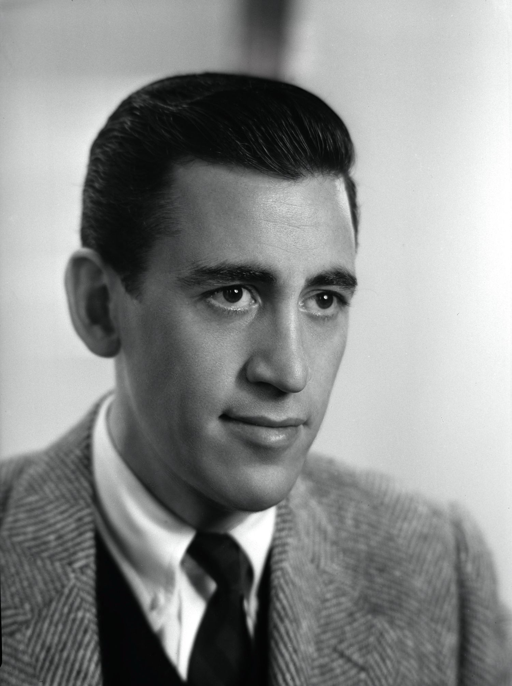
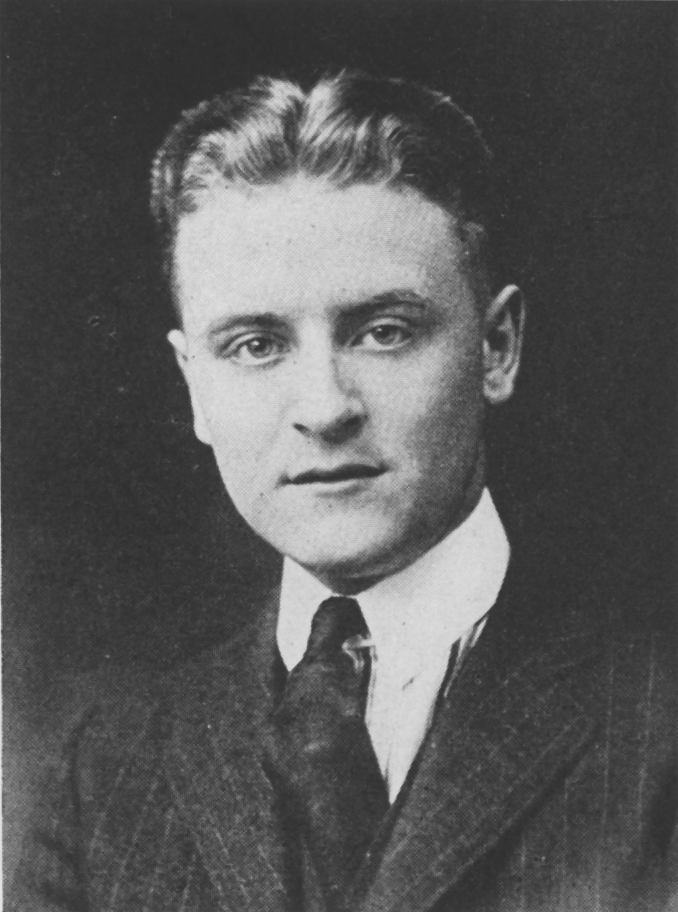
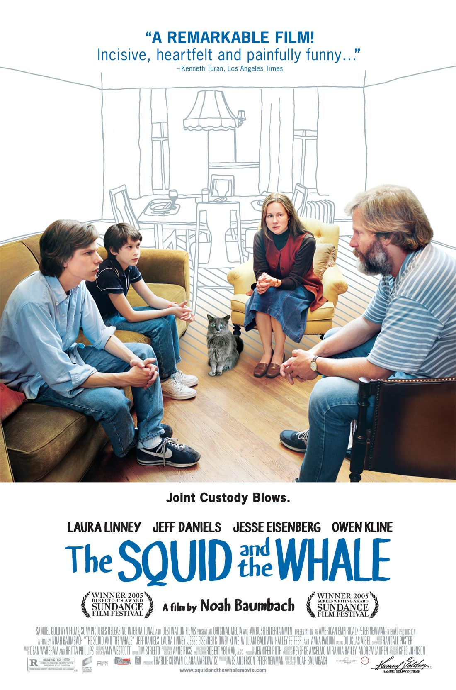
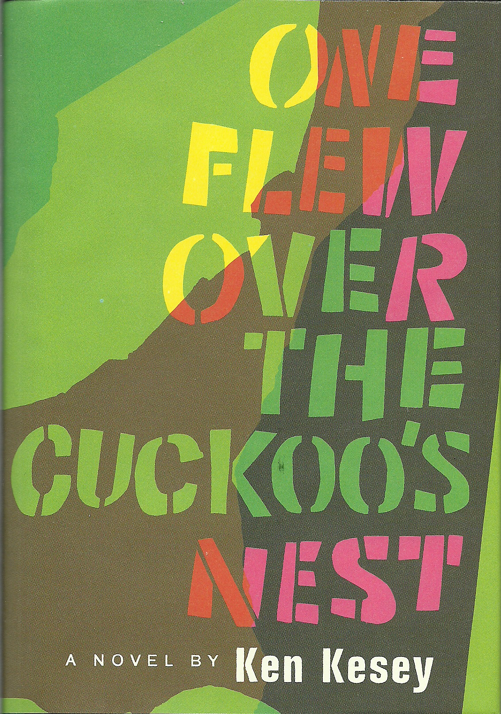

Jerome David "J. D." Salinger (/ˈsælɪndʒər/; January 1, 1919 – January 27, 2010) was an American writer who won acclaim early in life. He led a very private life for more than a half-century. He published his final original work in 1965 and gave his last interview in 1980.Salinger was raised in Manhattan and began writing short stories while in secondary school. Several were published in Story magazine in the early 1940s before he began serving in World War II. In 1948, his critically acclaimed story "A Perfect Day for Bananafish" appeared in The New Yorker magazine, which became home to much of his later work. In 1951, his novel The Catcher in the Rye was an immediate popular success. His depiction of adolescent alienation and loss of innocence in the protagonist Holden Caulfield was influential, especially among adolescent readers.

- Trailer
- Buy
J.D. Salinger
Girl, Interrupted is a best-selling1993 memoir by American author Susanna Kaysen, relating her experiences as a young woman in a psychiatric hospital in the 1960s after being diagnosed with borderline personality disorder. The memoir's title is a reference to the Vermeer painting Girl Interrupted at her Music.While writing the novel Far Afield, Kaysen began to recall her almost two years at McLean Hospital. She obtained her file from the hospital with the help of a lawyer.In 1999, the memoir was adapted into a film of the same name starring Winona Ryder and Angelina Jolie. It was directed by James Mangold.ContentsPlot introductionThe plot of Girl, Interrupted does not follow a linear storyline, but instead the author provides personal stories through a series of short descriptions of events and personal reflections on why she was placed in the hospital.
- Trailer
- Buy

Girl, Interrupted

F. Scott Fitzgerald
The Squid and the Whale is a 2005 American comedy-drama film written and directed by Noah Baumbach and produced by Wes Anderson. It tells the semi-autobiographical story of two boys in Brooklyn dealing with their parents' divorce in the 1980s. The film is named after the giant squid and sperm whale diorama housed at the American Museum of Natural History, which is seen in the film. The film was shot on Super 16mm, mostly using a handheld camera. The Squid and the Whale was a critical success. At the 2005 Sundance Film Festival, the film won awards for best dramatic direction and screenwriting, and was nominated for the Grand Jury Prize. Baumbach later received an Academy Award nomination for Best Original Screenplay. The film received six Independent Spirit Award nominations and three Golden Globe nominations.

- Trailer
- Buy
The Squid and the Whale

One Flew over the Cuckoo's Nest

Lee Harper

My So Called Life

Beat Happening